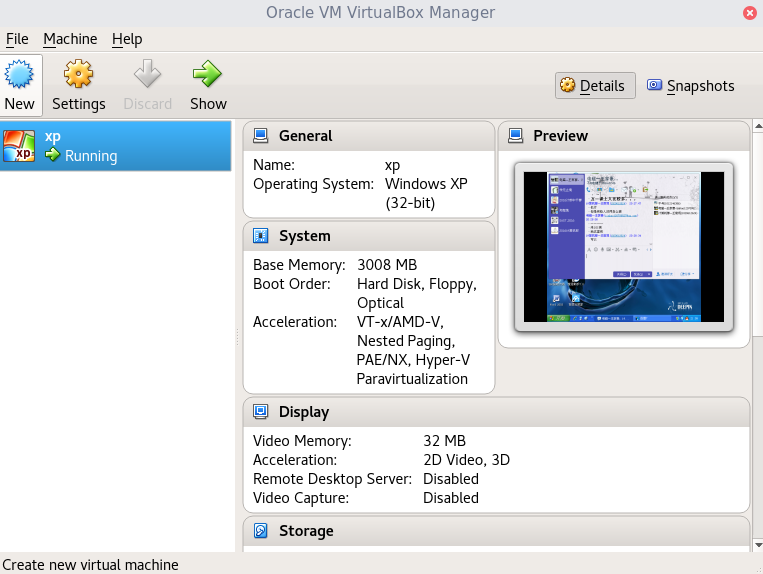

虚拟机，试试在虚拟机装Linux，首先声明，这不是必需的，后面的课程主要是通过远程控制来完成，不一定非要有 个Linux，自己装Linux，哪怕是在虚拟机装，也是比较折腾人的，一节课装个系统的话就什么都干不了了，所以建议是有打算 更深入学习Linux的同学，在课后时间自己安装上Linux。
首先要知道虚拟机是什么，其实就是通过软件模拟出一台电脑需要的硬件，也就是用来在电脑里运行一台电脑， 相对于“虚拟机”来说，安装虚拟机软件的被称为“实体机”，“宿主机”，这虚拟机不论发生了什么，都不会对实体机造成 多大的影响，一般最多就只是相当于一个程序崩溃了，所以通常虚拟机有被用来做些比较危险的事，比如运行安全性未知 的程序，再比如在虚拟机研究启动引导相关的，就不用频繁重启实体机了。
这里，要做的是在虚拟机里安装Linux，一般常用的虚拟机就是两种，VMware,VitrualBox,两者都是 跨平台的，windows，Linux，Mac都有相应的版本，这两个最大的区别就是，VitrualBox是开源免费的，可以直接在 官网免费下载使用，如果是上课时间就别下载了，找我copy，VitrualBox下载，然而VMware是收费的，所以下面用VitrualBox。
其实一个普通软件的简单使用是属于计算机基础的，也就是拿到手上随便点点就要能简单使用，所以这里只 上几张图，其他的只要胆大心细，敢于折腾就可以了，一开始也说了，不愿意折腾的可以不装Linux，只用远程控制就够学了。
新建虚拟机，然后选好自己要装的系统，然后后面的设置比如内存硬盘，默认就好。

然后开机前，先点设置，在设置里的存储里选个系统镜像ISO做为虚拟机的光驱。
然后开机时按F12选择CDROM引导。
然后就能看到进入了Linux。
通过光盘，免安装的进入的系统叫做LiveCD，各大Linux的发行版都有自己的LiveCD，地位类似安装windows常见的windowsPE，在这个系统里做的修改在重启后都会消失，可以在LiveCD里面安装Linux，Linux出现问题比如密码忘了，可以进LiveCD修复，但于windowsPE不同的是，这个LiveCD的使用体验是和真正安装后的系统完全一样的，LiveCD什么样，装完系统就是什么样，LiveCD里也能安装软件，也能编程，什么都能干，只是重启后都没了，windowsPE只是阉割版的操作系统。
下面演示下安装远程，这里用的是archbang，安装和上手的难度介于arch和ubuntu，比arch多了图形界面，安装向导，支持离线安装，安装后自带些许常用的程序，比ubuntu少了友好的界面操作(ubuntu可以全程鼠标安装)，以及中文输入法，
看上图的安装向导，这里囊括了安装Linux所必需在意的东西，每个都详细介绍也不可能 记得住，所以这里就简单说明+举个例子，arch的维基里面有详细的信息，在别的发行版也有很多方面通用的，有需要可以看看。
1.Keyboard layout
键盘布局，就是键盘上的每个键对应的文字和符号，大家都是技术型人才，不能天真的以为键 盘上写着什么就能输入什么，其实键盘给电脑发送的只是一个数字，由操作系统决定这个数字意味着什么，这个键 盘布局就是这么个作用，我们的的键盘上刻画的符号普遍都是美国(us)，选中文(cn)也是一样的，当然，这个在安 装完系统后也是可以改的，只是有点麻烦了，而且不同发行版都一定的区别，
2.Mirrorlist
镜像列表，和装软件有关，要知道，这些有名的Linux发行版，要安装软件是很方便的，因为对于同一个发行版的同一个版本，大家的 软件依赖情况是一样的，你安装gcc-5.2需要先安装过glibc-2.22，那么别人也能安装gcc-5.2也 是依赖glibc-2.22，那么我把gcc-5.2和glibc-2.22分别打包起来放在网上，然后在数据库里存一条，安装gcc-5.2必需 先安装glibc-2.22，这样别人安装gcc-5.2时如果没安装glibc-2.22，系统就可以自动安装glibc-2.22，正常情况这样gcc -5.2就一定可以用了，于是这些软件的安装就变的无比简单，一条命令就确保可用了，比如arch系 列的Linux只要"pacman -S gcc"就可以正确安装gcc直接就能做c语言编程了。
有名的发行版都有这样的软件仓库，被称为软件源(repository)，为了满足世界各地用户的速度，这样的仓库显然 不可能只有一个，而这个镜像列表就是确定你打算哪个软件仓库下载软件，至于速度，国内自然是用国内的源比较快，至于具 体的源，不同发行版的不同版本的源是不一样的，可以在相应的官网找到源的地址，或者直接百度吧。
3.Partition Disk
硬盘分区，重点，Linux的目录是树状的，根结点/下面有多个文件夹和文件，每个文件夹下又可以有多个文件，也就是说一切 都在根结点/下面，与windows的C盘D盘E盘不一样，硬盘分区这一步就是决定根结点/挂载(mou nt)在哪个硬盘的哪个分区，有的发行版还可以在这一步决定其他任何目录的挂载点，这里不需要。
如果硬盘没分区的话，要先分区，显然虚拟机创的硬盘是没分区的，这里要区分你想要的分区表MBR还是GPT， MBR用cfdisk创建分区表以及分区，GPT用gdisk，这两都是命令行下相对容易使用的分区 工具，以下使用cfdisk，图形界面分区工具一般是用gparted，至于文件系统，一般就ext3就可以了，还 有swap(交换)分区不是必要的，是在内存不足时把部分内存换到硬盘上来。
4.Install ArchBang
安装，安装系统到选择的磁盘，这步纯自动，比较慢。

5.fstab
file system table,文件系统列表？这步一般都是用自动生成的，不用改，下图是选择如何指定分区。1是根据在/dev目录下的唯一文件名，如果增加减少硬盘，可能会变。
2是根据每个硬盘的唯一识别码 (Universally Unique Identifier)，至少理论上不会出现重复，格式化之类的会变。
3是根据标签，这可以自己给分区随便设置的，
前面讲了挂载，这个文件就是决定每次开机时自动挂载哪些目录，这表就存在/etc/fstab，乱改可导致进不了系统。
6.Hostname
主机名，就是给电脑起个名字，并没有什么重要的作用，而且随时能改的。
7.Set Clock and Time Zone
设置时钟和时区，时区的话，中国大陆就选“Asia”-“Shanghai”
这里Set Clock不是设置几点几分，这东西存在主板里了，装几个系统都不用改，这里只有两选项，简单介绍，UTC表示主板里存的是伦敦那 个标准时间，LOCALTIME表示主板里存的是当地的时间，Linux一般默认是前者，Windows却是后者，所以经常出现双系统的时间差了八小时，有用Windows的话，选后者就可以，用hwclock命令可以改的，hwclock --systohc --utc，hwclock --systohc --localtime。

8.System Locale
系统语言环境，英语一般用美国的en_US，简体中文是zh_CN。
9.Run Mkinitcpio
创建初始化内存盘，看起来很高大上，是用来检测和初始化硬件的，反正全自动的，暂时不需要太了解，知道有这么个东西就好，老版本的可能叫mkinitrd和mkinitramfs，mkinitrd和mkinitramfsmkinitrd和mkinitramfs
10.Install Bootloader
安装引导器，不论是BIOS引导还是EFI引导，都不是直接引导系统，而是引导这个引导器，然后由这个引导器去引导进入系统，最常用的是grub2，这里后面就自动安装了，
这里有个很重要的，就是这个引导器安装在哪个分区，这里默认了，但一般是要自已选的，但是如果是MBR分区表，要安装在主分区才能引导，或者安装在整个硬盘的头部，这样所有主分区都无法引导了，只能引导这个grub2。
11.Root Password
设置最高权限账户root的密码。
12.User Accounts
添加一个账户，Linux的账户名不能是大写字母，就这些了，有的发行版可能没这么多步骤，说明是默认了一些东西。